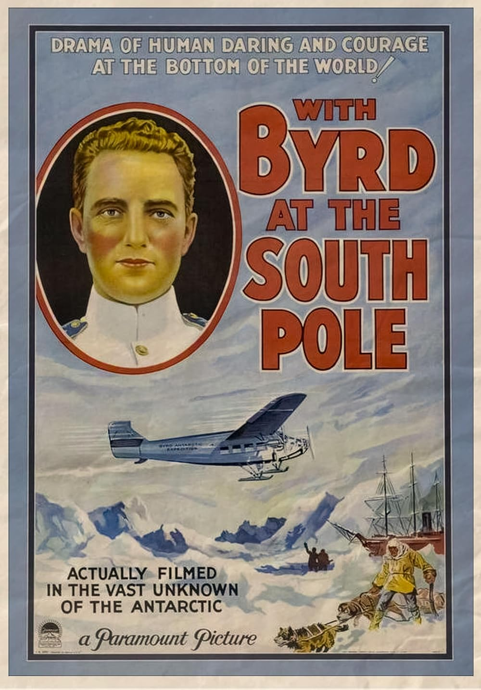

With Byrd at the South Pole
3rd Academy Awards
(Oscars 1930)
1 Nomination, 1 Award
| Nominations | ||
|---|---|---|
| Category | Nominees | Result |
| Cinematography | Joseph T. Rucker and Willard Van Der Veer | Won |